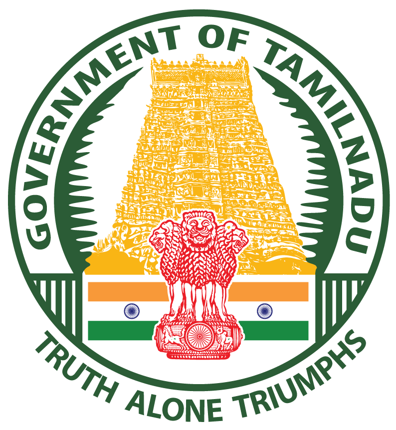

THANJAVUR DISTRICT
தஞ்சாவூர் மாவட்டம்

 THANJAVUR DISTRICT
|
|
THANJAVUR DISTRICTGranary’s of South IndiaRiver cauvery is the Main Source of irrigation for Cultivation in this district, which is known for its heritage in water management. Composite Thanjavur District with its fertile soil is one of the largest paddy cultivation area not only in Tamilnadu but also in South India. Thanjavur District is in the east coast of Tamil Nadu. The district lies between 78. 43’ and 70. 23’ of the Eastern longitudes and 9.50′ and 11.25’ of the Northern Latitudes.Since composite Thanjavur is large in extent, for administrations Convienience two districts were carved out from Thanjavur composite district.On 19.01.1991 Nagapattinam district was formed by bifurcating Thanjavur district At the time Nagapattinam district included Thiruvarur, Mayiladudurai, Mannargudi, Nagapattinam divisions and Valangaiman taluk from Kumabakonam division. |
Thiru. Deepak Jacob I.A.S |
District Admin Units
Revenue
Revenue Divisions : 3 
DevelopmentBlock : 14 
Local Bodies Corporations : 2 
ConstituenciesAssembly : 8 |
District At a GlanceGeneral:District: ThanjavurHeadQuarters: Thanjavur State: TamilNadu Area:Total: 339923.26 Sq.MsRural: 335321.77 Sq.Ms Urban: 4337.86 Sq.Ms Forest: 263.63 Sq.Ms Population:Total: 2405890 Male: 1182416Female: 1223474 |
Departments
Tourism
Agriculture
Tamil Development
Revenue
District Supply Office
Education
Agri. Engineering
DDAWO
Mahalir Thittam
Social Welfare
PWD (Water Resource)
TNEB
TWAD
Animal Husbandry
Corporation Thanjavur
DBCWO
DRDA
District Panchayat
Noonmeal
Labour Welfare
Agricultural Marketing
EX-Servicemen Welfare Board
DADWO
Town Panchayat
TAHDCO
Hindu Religious &
Charitable Endowments
|
|